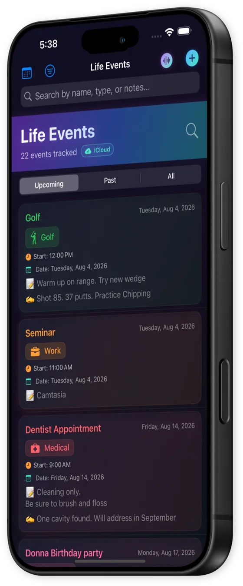
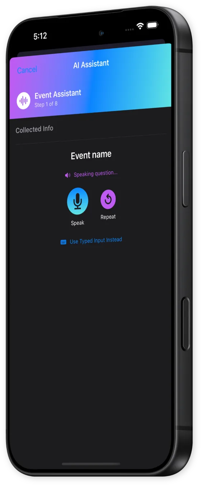
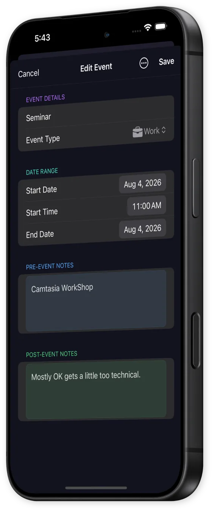
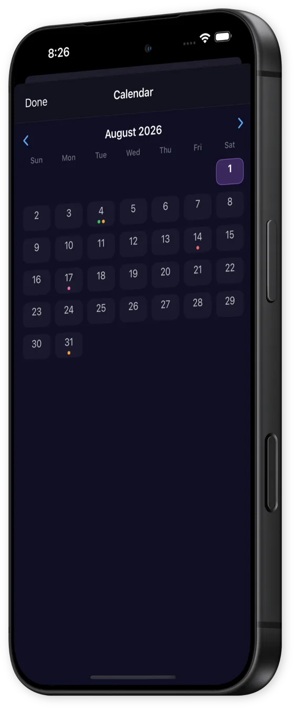

Life Events Tracker
Remember the moments that shape your life.
Remember, organize and revisit the events that shape your life. The Event Assistant asks you about each event out loud, you add notes before and after it happens, and everything stays color-coded, searchable and synced through iCloud.




Scroll sideways to see every screen
What you can do
Event Assistant
Add an event by voice in eight short steps. The app speaks each question, and you can repeat it or type instead.
Color-coded event types
Work, medical, golf and more, each with its own color so you can tell them apart at a glance.
Notes before and after
Jot down what to remember going in, then add how it went afterward.
Calendar view
See the month at a glance, with colored dots on the days that have events.
Find any event
Switch between upcoming, past and all events, or search by name, type or notes.
Synced with iCloud
Your events stay in step across your iPhone and iPad through your own iCloud account.
See Life Events Tracker in action
Watch the Event Assistant add a dentist appointment, one spoken question at a time. The app reads each question aloud and your answer appears on screen as you say it.
Tap play to watch. Turn your sound on to hear the app’s spoken questions.
Life Events Tracker is almost ready.
A public TestFlight beta opens soon. Want an invite when it does?